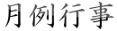
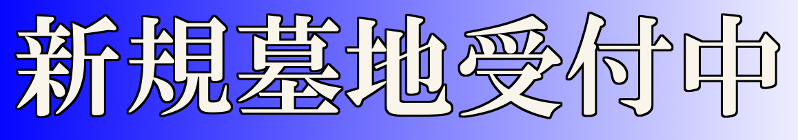

| 大施餓鬼会（法話） | 6月18日 午後1時 |
| 新盆法要 | 8月12日 午前10時30分 |
| 盂蘭盆会 | 8月12日～15日 迎え盆 12日夕刻～ 送り盆 15日夕刻〜 |
| 秋彼岸会 | 9月 秋分の日を中日として一週間 |
| 御忌会 | 2月 第4日曜日 午後1時 |
| 春彼岸会 | 3月 春分の日を中日として一週間 |

毎月第2水曜日 13：30～15：30 ※定員数に達した為、現在は受け付けておりません。
参加冥加料は1回500円で、どなたでも参加できます。また見学、体験写経も随時できます。まず浄土宗の日常勤行のお勤めをして、心静かに写経を致します。写経をするところの解説も申し上げております。写経後はお念仏のお称えの中、お一人お一人がご本尊阿弥陀さまに写経紙を奉呈致します。終了後は茶話会にて親睦を深めています。
